<div class="main-background">
    <div class="container-sm">
        <!-- Text and Image row -->
        <div class="row row-cols-1 row-cols-lg-1">
            <div class="col">
                <div class="row">
                    <div class="col-12 d-block">
                        <h1 id="intro-text" class="fade-in-1 text-l-start">Exploring how <span class="green-text">Music</span> induces <span class="green-text">Emotion</span>, <span id="intro-text" class="fade-in-2 text-l-start" style="margin-bottom: 18vh;">one data point at a time.</span></h1>
                    </div>

                    <!-- <div class="col-12 d-block d-lg-none">
                        <h1 id="intro-text" class="fade-in-1 text-l-start text-center" style="margin-bottom: 6vh;">Exploring how <span class="green-text">Music</span> induces <span class="green-text">Emotion</span>, one data point at a time.</h1>
                    </div> -->

                    <div class="col-12 mt-5 justify-content-center d-flex fade-in-3">
                        <h2>Current Work</h2>
                    </div>
                    <div class="col-12 col-md-8 mt-2 justify-content-center d-flex fade-in-3">
                        <div class="d-none d-md-block">
                            <h4><em>Overlooked Voices and Overlooked Memories: A Mixed Methods Approach into the Roles of Vocals on Musically Induced Nostalgia</em></h4>
                        </div>
                        <div class="d-md-none d-block">
                            <h4 class="text-center"><em>Overlooked Voices and Overlooked Memories: A Mixed Methods Approach into the Roles of Vocals on Musically Induced Nostalgia</em></h4>
                        </div>
                    </div>
                    <div class="col-12 col-md-4 mt-2 justify-content-center d-flex fade-in-3">
                        <div class="w-75">
                            <a routerLink="/{{this.classRoutes.dissertation}}">
                                <button class="green-button bright-hover"><h5>Learn More</h5></button>
                            </a>
                        </div>
                    </div>
                </div>
            </div>
            <!-- <div class="col d-flex align-items-center justify-content-center">
                <div id="hero-image" class="col fade-in-2" style="margin-top: 8vh;">
                    
                </div>     
            </div>        -->
        </div>
    </div>
</div> 